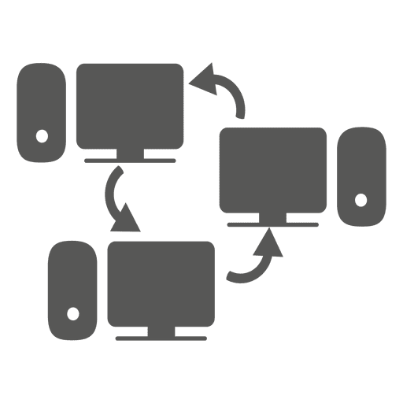

Redes Equipo 1 Seccion 7
SI podemos definir nuestro equipo en tan solo tres palabras serian "Amor a Redes", un equipo comprometido con el aprendizaje continuo de las infraestructuras de comunicaciones, en miras de convertirse eruditos en el area telecomunicaciones.

Anrés Anturi
ai.anturia@uniandes.edu.co
No me gusta hacer nada aparte de los laboratorios de redes.